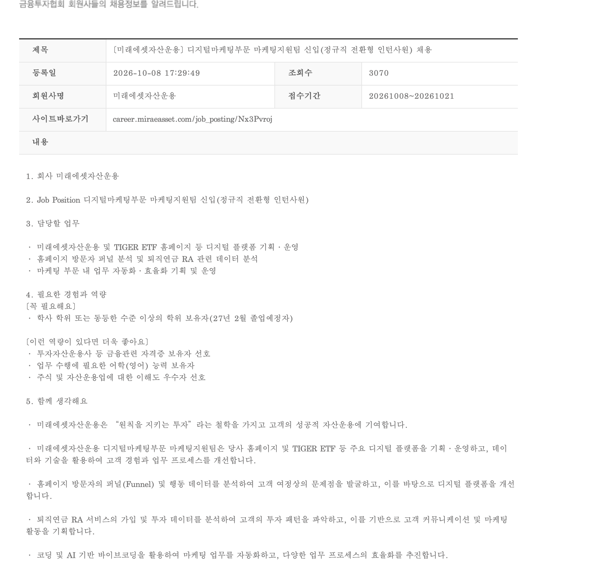

상태를 바로 알기 어렵다
지원 가능·마감·마감일 미정 공고를 목록에서 다시 구분해야 합니다.
KOFIA JOB BOARD × CAREER AGENT
흩어진 공고를 매일 정리하고, 마감 관리부터 직무·프로젝트 연결까지 한곳에서 지원하는 정보 서비스입니다.
01 · PROBLEM
원문을 없애는 것이 아니라, 지원자가 판단하기 좋은 순서로 다시 구조화하는 것이 출발점이었습니다.

① 날짜를 다시 해석 ② 긴 본문에서 조건 탐색지원 가능·마감·마감일 미정 공고를 목록에서 다시 구분해야 합니다.
직무·경력·요구역량이 제목과 긴 본문에 흩어져 있습니다.
공고를 열고 날짜를 해석한 뒤 메모나 엑셀로 다시 옮겨야 합니다.
02 · SOLUTION
캡스톤과 AI 기능은 없애지 않고, 공고 탐색 이후 사용하는 커리어 분석 도구로 재배치했습니다.
검색 · 직무 · 경력 · 마감 상태
달력 · 관심 저장 · 마감 임박
직무 빈도 · 요구역량 · 백오피스
캡스톤 비교 · Agent · 12주 계획
03 · JOB EXPERIENCE
목록은 지원 상태로 나누고, 긴 본문은 업무·자격·우대사항 등 지원 판단 단위로 다시 구조화했습니다.
회사명, 직무, 키워드로 검색
신입·경력리서치기업분석AI
04 · DATA PIPELINE
예약 시간에 실행을 시도하고, 신규·최근 공고만 재확인해 원문 사이트에 보내는 요청을 줄였습니다.
GitHub Actions
신규·최근 상세
기간·직무·상세
방어 로직 + 24 tests
Git push → Vercel
05 · EXPLAINABLE MATCH
유진한일합섬 · 영업·생산·수익성 최적화
영업 → 생산 → 재고 → 마진 의사결정
손익·KPI·프로세스·보고·자동화
ERP 판매·작업지시·가동중단·마진
CEO·전략기획·영업·생산·재무 협업
1점 단위의 통계적 차이보다 90점대·80점대의 상대적 순위를 봅니다.
06 · CAREER AGENT
추천의 최종 결정권은 사용자에게 두고, Agent의 도구는 읽기 전용으로 제한했습니다.
실제 로컬 데이터에 있는 회사·URL만 반환
WebGPU 로컬 모델 또는 규칙 기반 호환 모드
지원·전송·수정 없이 읽기 도구만 사용
최종 지원 조건은 반드시 원문에서 확인
07 · OUTCOME
마감 알림 · 개인 캘린더 내보내기 · 사용자 검증을 통한 점수 기준 고도화